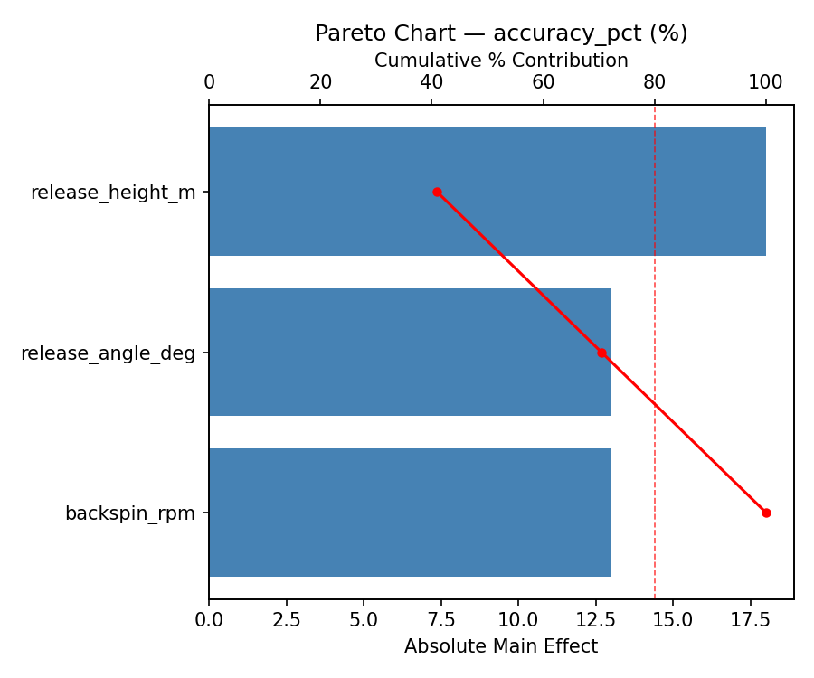
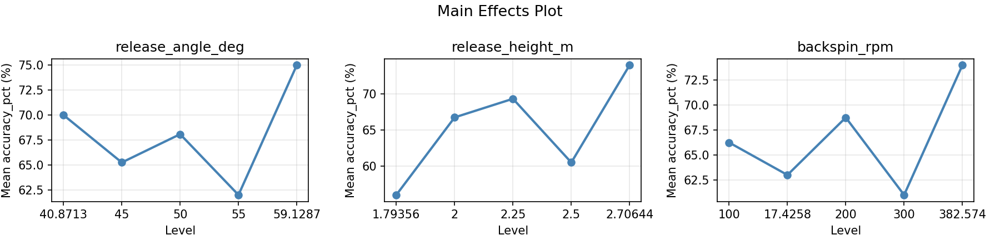
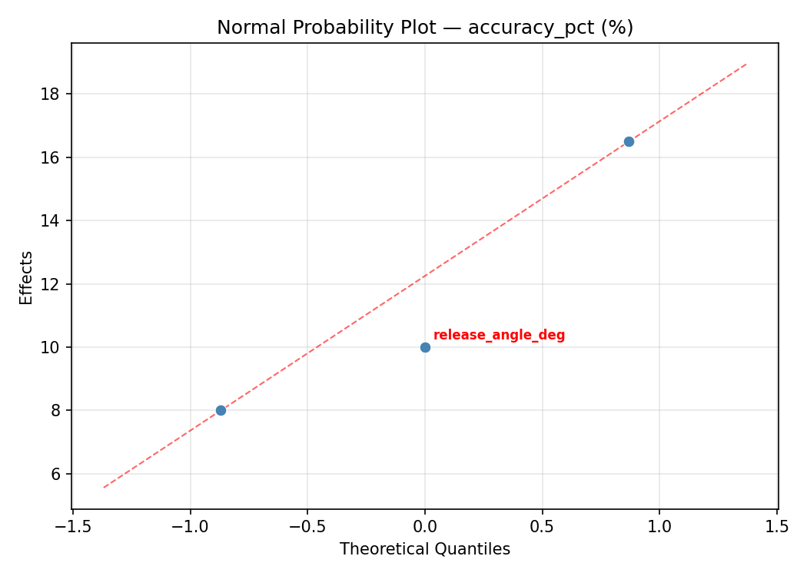
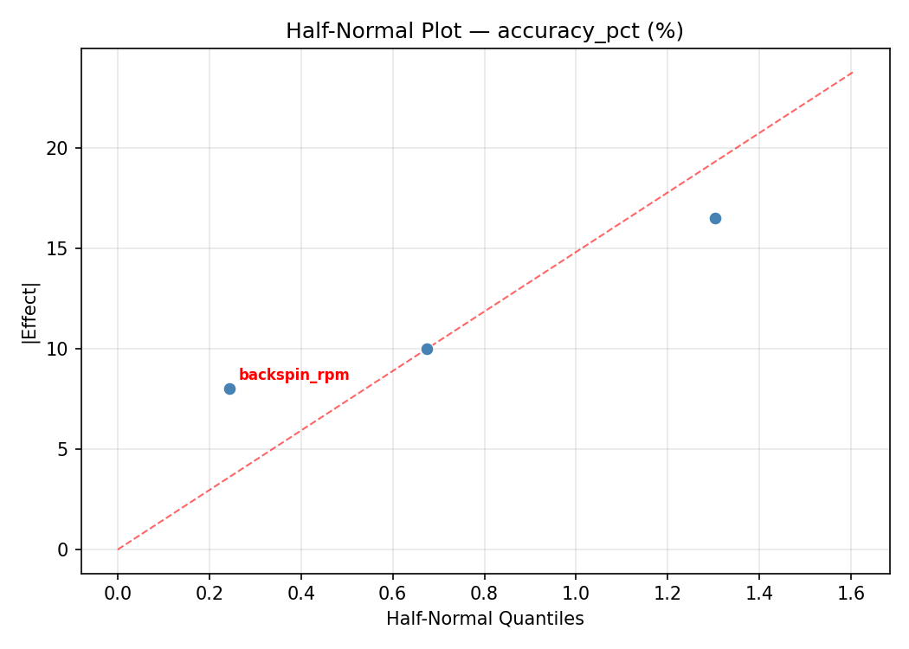
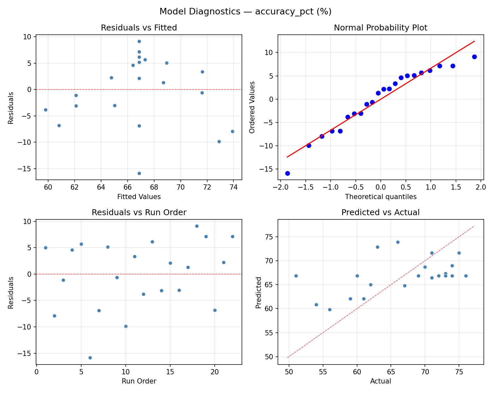
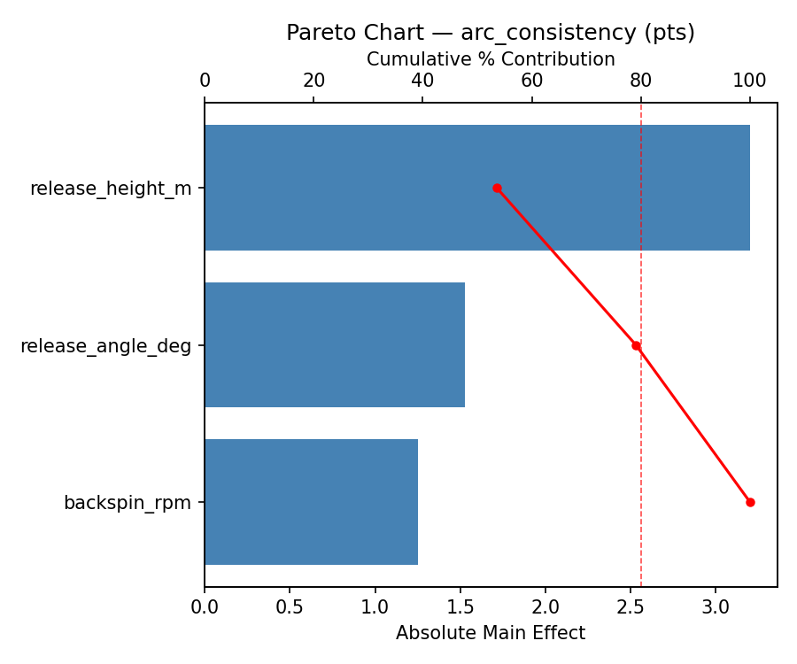
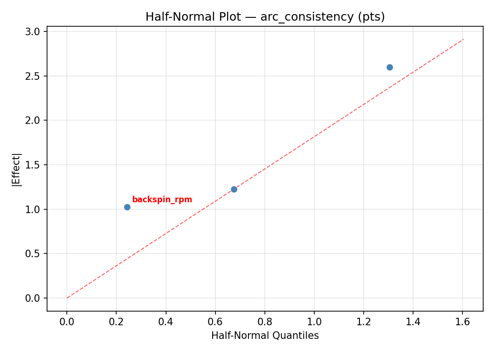
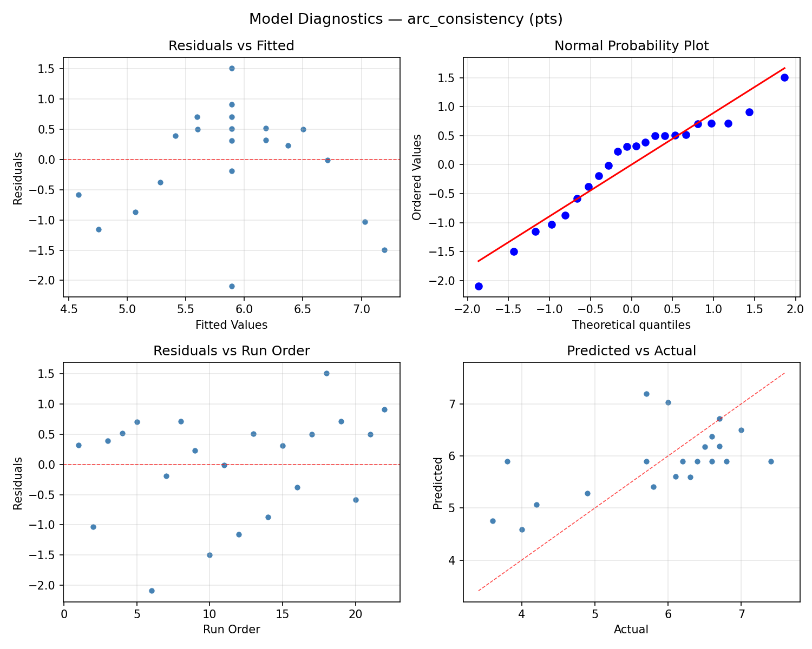
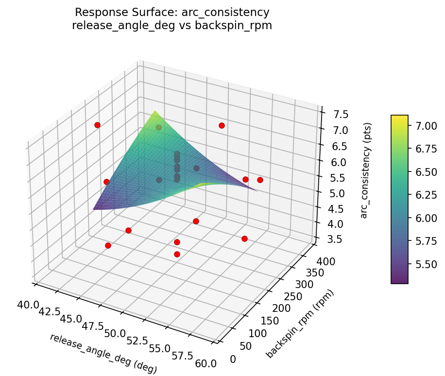
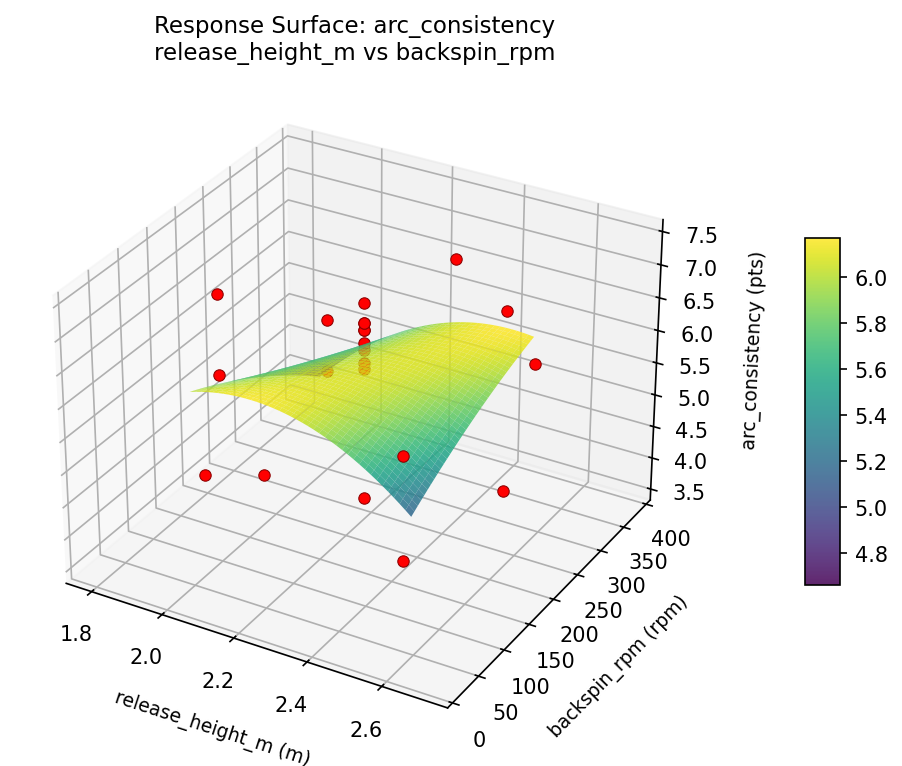

Summary
This experiment investigates basketball free throw form. Central composite design to maximize accuracy and arc consistency by tuning release angle, release height, and backspin rate.
The design varies 3 factors: release angle deg (deg), ranging from 45 to 55, release height m (m), ranging from 2.0 to 2.5, and backspin rpm (rpm), ranging from 100 to 300. The goal is to optimize 2 responses: accuracy pct (%) (maximize) and arc consistency (pts) (maximize). Fixed conditions held constant across all runs include distance = 4.6m, ball = size_7.
A Central Composite Design (CCD) was selected to fit a full quadratic response surface model, including curvature and interaction effects. With 3 factors this produces 22 runs including center points and axial (star) points that extend beyond the factorial range.
Quadratic response surface models were fitted to capture potential curvature and factor interactions. The RSM contour plots below visualize how pairs of factors jointly affect each response.
Key Findings
For accuracy pct, the most influential factors were release angle deg (48.1%), release height m (30.9%), backspin rpm (20.9%). The best observed value was 76.0 (at release angle deg = 50, release height m = 2.25, backspin rpm = 200).
For arc consistency, the most influential factors were release angle deg (48.7%), release height m (35.7%), backspin rpm (15.6%). The best observed value was 7.4 (at release angle deg = 50, release height m = 2.25, backspin rpm = 200).
Recommended Next Steps
- Run confirmation experiments at the predicted optimal settings to validate the model.
- Consider whether any fixed factors should be varied in a future study.
Experimental Setup
Factors
| Factor | Low | High | Unit |
|---|
release_angle_deg | 45 | 55 | deg |
release_height_m | 2.0 | 2.5 | m |
backspin_rpm | 100 | 300 | rpm |
Fixed: distance = 4.6m, ball = size_7
Responses
| Response | Direction | Unit |
|---|
accuracy_pct | ↑ maximize | % |
arc_consistency | ↑ maximize | pts |
Configuration
{
"metadata": {
"name": "Basketball Free Throw Form",
"description": "Central composite design to maximize accuracy and arc consistency by tuning release angle, release height, and backspin rate"
},
"factors": [
{
"name": "release_angle_deg",
"levels": [
"45",
"55"
],
"type": "continuous",
"unit": "deg"
},
{
"name": "release_height_m",
"levels": [
"2.0",
"2.5"
],
"type": "continuous",
"unit": "m"
},
{
"name": "backspin_rpm",
"levels": [
"100",
"300"
],
"type": "continuous",
"unit": "rpm"
}
],
"fixed_factors": {
"distance": "4.6m",
"ball": "size_7"
},
"responses": [
{
"name": "accuracy_pct",
"optimize": "maximize",
"unit": "%"
},
{
"name": "arc_consistency",
"optimize": "maximize",
"unit": "pts"
}
],
"settings": {
"operation": "central_composite",
"test_script": "use_cases/212_basketball_shooting/sim.sh"
}
}
Experimental Matrix
The Central Composite Design produces 22 runs. Each row is one experiment with specific factor settings.
| Run | release_angle_deg | release_height_m | backspin_rpm |
|---|
| 1 | 50 | 2.25 | 200 |
| 2 | 55 | 2 | 300 |
| 3 | 45 | 2.5 | 100 |
| 4 | 50 | 2.70644 | 200 |
| 5 | 50 | 2.25 | 200 |
| 6 | 40.8713 | 2.25 | 200 |
| 7 | 50 | 2.25 | 17.4258 |
| 8 | 50 | 2.25 | 200 |
| 9 | 55 | 2.5 | 100 |
| 10 | 59.1287 | 2.25 | 200 |
| 11 | 50 | 2.25 | 200 |
| 12 | 50 | 1.79356 | 200 |
| 13 | 50 | 2.25 | 200 |
| 14 | 45 | 2 | 300 |
| 15 | 50 | 2.25 | 200 |
| 16 | 55 | 2 | 100 |
| 17 | 50 | 2.25 | 382.574 |
| 18 | 55 | 2.5 | 300 |
| 19 | 50 | 2.25 | 200 |
| 20 | 45 | 2 | 100 |
| 21 | 45 | 2.5 | 300 |
| 22 | 50 | 2.25 | 200 |
Step-by-Step Workflow
1
Preview the design
$ doe info --config use_cases/212_basketball_shooting/config.json
2
Generate the runner script
$ doe generate --config use_cases/212_basketball_shooting/config.json \
--output use_cases/212_basketball_shooting/results/run.sh --seed 42
3
Execute the experiments
$ bash use_cases/212_basketball_shooting/results/run.sh
4
Analyze results
$ doe analyze --config use_cases/212_basketball_shooting/config.json
5
Get optimization recommendations
$ doe optimize --config use_cases/212_basketball_shooting/config.json
6
Multi-objective optimization
With 2 competing responses, use --multi to find the best compromise via Derringer–Suich desirability.
$ doe optimize --config use_cases/212_basketball_shooting/config.json --multi
7
Generate the HTML report
$ doe report --config use_cases/212_basketball_shooting/config.json \
--output use_cases/212_basketball_shooting/results/report.html
Features Exercised
| Feature | Value |
|---|
| Design type | central_composite |
| Factor types | continuous (all 3) |
| Arg style | double-dash |
| Responses | 2 (accuracy_pct ↑, arc_consistency ↑) |
| Total runs | 22 |
Analysis Results
Generated from actual experiment runs using the DOE Helper Tool.
Response: accuracy_pct
Top factors: release_angle_deg (48.1%), release_height_m (30.9%), backspin_rpm (20.9%).
ANOVA
| Source | DF | SS | MS | F | p-value |
|---|
| Source | DF | SS | MS | F | p-value |
| release_angle_deg | 4 | 342.8409 | 85.7102 | 1.644 | 0.2456 |
| release_height_m | 4 | 186.6742 | 46.6686 | 0.895 | 0.5052 |
| backspin_rpm | 4 | 99.3409 | 24.8352 | 0.476 | 0.7527 |
| Lack | of | Fit | 2 | 176.8598 | 88.4299 |
| Pure | Error | 7 | 364.8750 | | |
| Error | 9 | 541.7348 | 52.1250 | | |
| Total | 21 | 1170.5909 | 55.7424 | | |
Pareto Chart

Main Effects Plot

Normal Probability Plot of Effects

Half-Normal Plot of Effects

Model Diagnostics

Response: arc_consistency
Top factors: release_angle_deg (48.7%), release_height_m (35.7%), backspin_rpm (15.6%).
ANOVA
| Source | DF | SS | MS | F | p-value |
|---|
| Source | DF | SS | MS | F | p-value |
| release_angle_deg | 4 | 8.5115 | 2.1279 | 2.082 | 0.1659 |
| release_height_m | 4 | 4.8082 | 1.2020 | 1.176 | 0.3836 |
| backspin_rpm | 4 | 1.6140 | 0.4035 | 0.395 | 0.8077 |
| Lack | of | Fit | 2 | 3.1295 | 1.5647 |
| Pure | Error | 7 | 7.1550 | | |
| Error | 9 | 10.2845 | 1.0221 | | |
| Total | 21 | 25.2182 | 1.2009 | | |
Pareto Chart

Main Effects Plot

Normal Probability Plot of Effects

Half-Normal Plot of Effects

Model Diagnostics

Response Surface Plots
3D surfaces fitted with quadratic RSM. Red dots are observed data points.
accuracy pct release angle deg vs backspin rpm

accuracy pct release angle deg vs release height m

accuracy pct release height m vs backspin rpm

arc consistency release angle deg vs backspin rpm

arc consistency release angle deg vs release height m

arc consistency release height m vs backspin rpm

Multi-Objective Optimization
When responses compete, Derringer–Suich desirability finds the best compromise.
Each response is scaled to a 0–1 desirability, then combined via a weighted geometric mean.
Overall Desirability
D = 0.9545
Per-Response Desirability
| Response | Weight | Desirability | Predicted | Dir |
|---|
accuracy_pct |
1.5 |
|
76.00 0.9545 76.00 % |
↑ |
arc_consistency |
1.0 |
|
7.40 0.9545 7.40 pts |
↑ |
Recommended Settings
| Factor | Value |
|---|
release_angle_deg | 50 deg |
release_height_m | 2.25 m |
backspin_rpm | 200 rpm |
Source: from observed run #18
Trade-off Summary
Sacrifice = how much worse than single-objective best.
| Response | Predicted | Best Observed | Sacrifice |
|---|
arc_consistency | 7.40 | 7.40 | +0.00 |
Top 3 Runs by Desirability
| Run | D | Factor Settings |
|---|
| #11 | 0.8633 | release_angle_deg=50, release_height_m=2.25, backspin_rpm=17.4258 |
| #22 | 0.8528 | release_angle_deg=45, release_height_m=2.5, backspin_rpm=300 |
Model Quality
| Response | R² | Type |
|---|
arc_consistency | 0.3761 | quadratic |
Full Multi-Objective Output
============================================================
MULTI-OBJECTIVE OPTIMIZATION
Method: Derringer-Suich Desirability Function
============================================================
Overall desirability: D = 0.9545
Response Weight Desirability Predicted Direction
---------------------------------------------------------------------
accuracy_pct 1.5 0.9545 76.00 % ↑
arc_consistency 1.0 0.9545 7.40 pts ↑
Recommended settings:
release_angle_deg = 50 deg
release_height_m = 2.25 m
backspin_rpm = 200 rpm
(from observed run #18)
Trade-off summary:
accuracy_pct: 76.00 (best observed: 76.00, sacrifice: +0.00)
arc_consistency: 7.40 (best observed: 7.40, sacrifice: +0.00)
Model quality:
accuracy_pct: R² = 0.3812 (quadratic)
arc_consistency: R² = 0.3761 (quadratic)
Top 3 observed runs by overall desirability:
1. Run #18 (D=0.9545): release_angle_deg=50, release_height_m=2.25, backspin_rpm=200
2. Run #11 (D=0.8633): release_angle_deg=50, release_height_m=2.25, backspin_rpm=17.4258
3. Run #22 (D=0.8528): release_angle_deg=45, release_height_m=2.5, backspin_rpm=300
Full Analysis Output
=== Main Effects: accuracy_pct ===
Factor Effect Std Error % Contribution
--------------------------------------------------------------
release_angle_deg 17.2500 1.5918 48.1%
release_height_m 11.0833 1.5918 30.9%
backspin_rpm 7.5000 1.5918 20.9%
=== ANOVA Table: accuracy_pct ===
Source DF SS MS F p-value
-----------------------------------------------------------------------------
release_angle_deg 4 342.8409 85.7102 1.644 0.2456
release_height_m 4 186.6742 46.6686 0.895 0.5052
backspin_rpm 4 99.3409 24.8352 0.476 0.7527
Lack of Fit 2 176.8598 88.4299 1.696 0.2508
Pure Error 7 364.8750 52.1250
Error 9 541.7348 52.1250
Total 21 1170.5909 55.7424
=== Summary Statistics: accuracy_pct ===
release_angle_deg:
Level N Mean Std Min Max
------------------------------------------------------------
40.8713 1 51.0000 0.0000 51.0000 51.0000
45 4 67.7500 8.0984 56.0000 74.0000
50 12 68.2500 6.8639 54.0000 76.0000
55 4 67.7500 6.1305 60.0000 74.0000
59.1287 1 59.0000 0.0000 59.0000 59.0000
release_height_m:
Level N Mean Std Min Max
------------------------------------------------------------
1.79356 1 76.0000 0.0000 76.0000 76.0000
2 4 68.0000 5.4772 60.0000 72.0000
2.25 12 64.9167 7.8330 51.0000 75.0000
2.5 4 67.5000 8.5440 56.0000 74.0000
2.70644 1 74.0000 0.0000 74.0000 74.0000
backspin_rpm:
Level N Mean Std Min Max
------------------------------------------------------------
100 4 65.5000 6.6583 56.0000 71.0000
17.4258 1 73.0000 0.0000 73.0000 73.0000
200 12 65.7500 8.5400 51.0000 76.0000
300 4 70.0000 6.7330 60.0000 74.0000
382.574 1 67.0000 0.0000 67.0000 67.0000
=== Main Effects: arc_consistency ===
Factor Effect Std Error % Contribution
--------------------------------------------------------------
release_angle_deg 2.4250 0.2336 48.7%
release_height_m 1.7750 0.2336 35.7%
backspin_rpm 0.7750 0.2336 15.6%
=== ANOVA Table: arc_consistency ===
Source DF SS MS F p-value
-----------------------------------------------------------------------------
release_angle_deg 4 8.5115 2.1279 2.082 0.1659
release_height_m 4 4.8082 1.2020 1.176 0.3836
backspin_rpm 4 1.6140 0.4035 0.395 0.8077
Lack of Fit 2 3.1295 1.5647 1.531 0.2809
Pure Error 7 7.1550 1.0221
Error 9 10.2845 1.0221
Total 21 25.2182 1.2009
=== Summary Statistics: arc_consistency ===
release_angle_deg:
Level N Mean Std Min Max
------------------------------------------------------------
40.8713 1 3.8000 0.0000 3.8000 3.8000
45 4 5.7500 1.4457 3.6000 6.6000
50 12 6.1417 0.9443 4.0000 7.4000
55 4 6.2250 0.4573 5.7000 6.7000
59.1287 1 4.2000 0.0000 4.2000 4.2000
release_height_m:
Level N Mean Std Min Max
------------------------------------------------------------
1.79356 1 7.4000 0.0000 7.4000 7.4000
2 4 6.3000 0.4546 5.7000 6.7000
2.25 12 5.6250 1.1218 3.8000 7.0000
2.5 4 5.6750 1.4080 3.6000 6.6000
2.70644 1 6.8000 0.0000 6.8000 6.8000
backspin_rpm:
Level N Mean Std Min Max
------------------------------------------------------------
100 4 5.6250 1.3817 3.6000 6.7000
17.4258 1 6.4000 0.0000 6.4000 6.4000
200 12 5.7667 1.2543 3.8000 7.4000
300 4 6.3500 0.4359 5.7000 6.6000
382.574 1 6.1000 0.0000 6.1000 6.1000
Optimization Recommendations
=== Optimization: accuracy_pct ===
Direction: maximize
Best observed run: #18
release_angle_deg = 50
release_height_m = 2.25
backspin_rpm = 200
Value: 76.0
RSM Model (linear, R² = 0.0328, Adj R² = -0.1283):
Coefficients:
intercept +66.8636
release_angle_deg +0.5155
release_height_m +1.1679
backspin_rpm -0.9959
RSM Model (quadratic, R² = 0.1008, Adj R² = -0.5736):
Coefficients:
intercept +66.7847
release_angle_deg +0.5155
release_height_m +1.1679
backspin_rpm -0.9959
release_angle_deg*release_height_m +0.5000
release_angle_deg*backspin_rpm -0.0000
release_height_m*backspin_rpm +2.2500
release_angle_deg^2 -1.0105
release_height_m^2 +0.6395
backspin_rpm^2 +0.4895
Curvature analysis:
release_angle_deg coef=-1.0105 concave (has a maximum)
release_height_m coef=+0.6395 convex (has a minimum)
backspin_rpm coef=+0.4895 convex (has a minimum)
Notable interactions:
release_height_m*backspin_rpm coef=+2.2500 (synergistic)
release_angle_deg*release_height_m coef=+0.5000 (synergistic)
Predicted optimum (from linear model, at observed points):
release_angle_deg = 55
release_height_m = 2.5
backspin_rpm = 100
Predicted value: 69.5428
Surface optimum (via L-BFGS-B, linear model):
release_angle_deg = 55
release_height_m = 2.5
backspin_rpm = 100
Predicted value: 69.5428
Model quality: Weak fit — consider adding center points or using a different design.
Factor importance:
1. release_angle_deg (effect: 14.0, contribution: 40.6%)
2. release_height_m (effect: 10.2, contribution: 29.7%)
3. backspin_rpm (effect: 10.2, contribution: 29.7%)
=== Optimization: arc_consistency ===
Direction: maximize
Best observed run: #18
release_angle_deg = 50
release_height_m = 2.25
backspin_rpm = 200
Value: 7.4
RSM Model (linear, R² = 0.0158, Adj R² = -0.1482):
Coefficients:
intercept +5.8909
release_angle_deg +0.0898
release_height_m -0.0252
backspin_rpm -0.1361
RSM Model (quadratic, R² = 0.1561, Adj R² = -0.4769):
Coefficients:
intercept +6.0896
release_angle_deg +0.0898
release_height_m -0.0252
backspin_rpm -0.1361
release_angle_deg*release_height_m +0.1625
release_angle_deg*backspin_rpm +0.0375
release_height_m*backspin_rpm +0.3875
release_angle_deg^2 -0.3193
release_height_m^2 +0.0107
backspin_rpm^2 +0.0107
Curvature analysis:
release_angle_deg coef=-0.3193 concave (has a maximum)
release_height_m coef=+0.0107 negligible curvature
backspin_rpm coef=+0.0107 negligible curvature
Notable interactions:
release_height_m*backspin_rpm coef=+0.3875 (synergistic)
Predicted optimum (from linear model, at observed points):
release_angle_deg = 55
release_height_m = 2
backspin_rpm = 100
Predicted value: 6.1419
Surface optimum (via L-BFGS-B, linear model):
release_angle_deg = 55
release_height_m = 2
backspin_rpm = 100
Predicted value: 6.1419
Model quality: Weak fit — consider adding center points or using a different design.
Factor importance:
1. release_angle_deg (effect: 2.2, contribution: 47.6%)
2. backspin_rpm (effect: 1.2, contribution: 27.0%)
3. release_height_m (effect: 1.2, contribution: 25.4%)